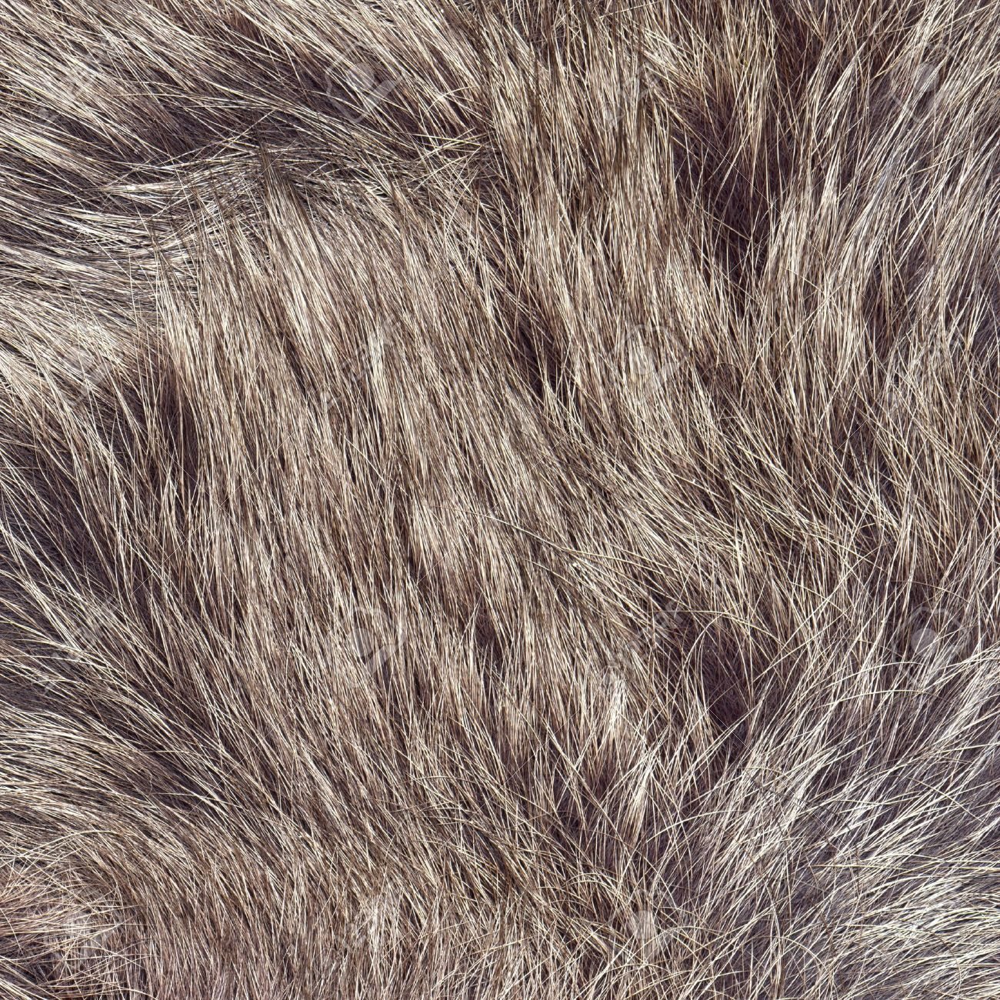
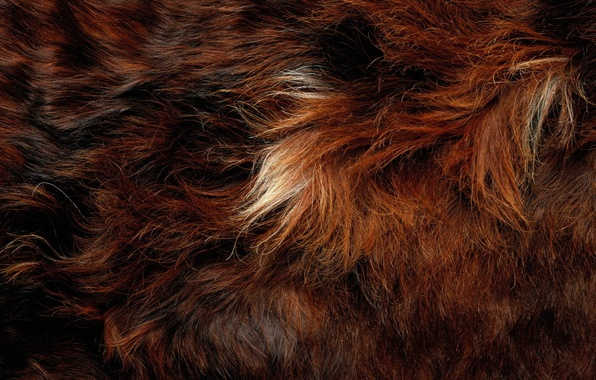
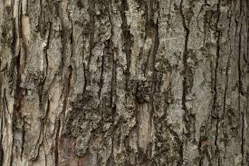
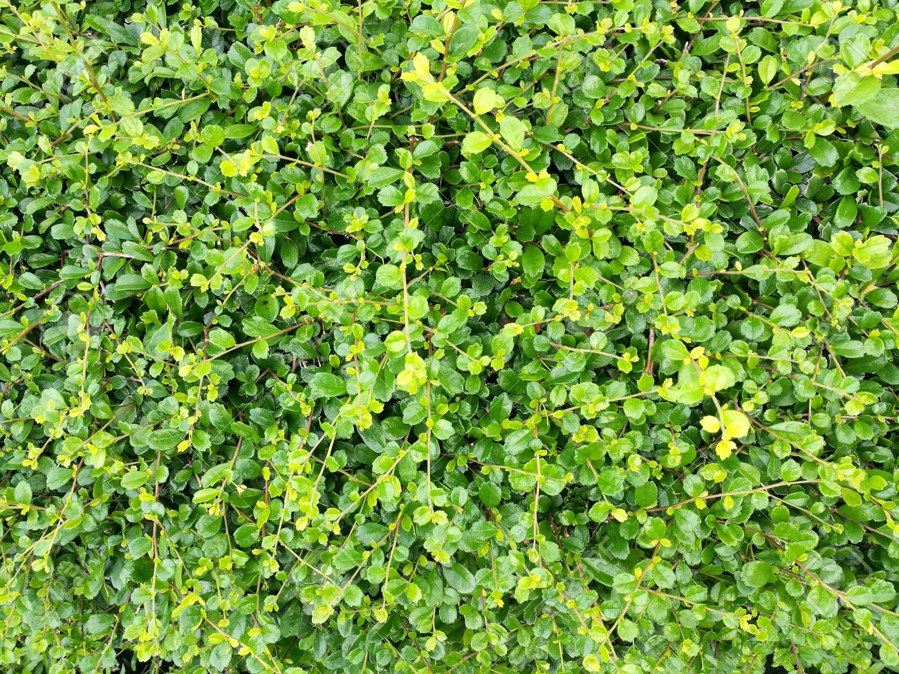

Oops ... your browser doesn't support the HTML5 canvas element
   
torso1 angle -180
180
torso2 angle -180
180
head2 angle -180
180
head1 angle -180
180
left upper arm angle -180
180
left lower arm angle -180
180
right upper arm angle -180
180
right lower arm angle -180
180
left upper leg angle -180
180
left lower leg angle -180
180
right upper leg angle -180
180
right lower leg angle -180
180
tail angle -180
180
tree angle -180
180